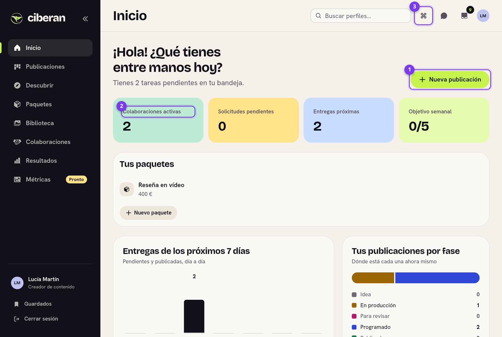
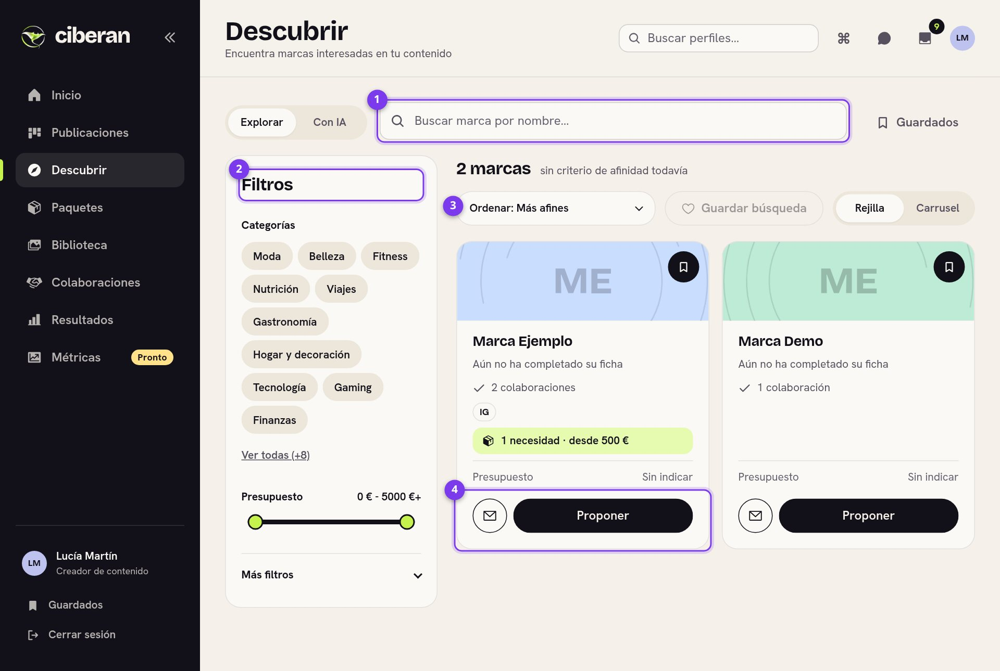
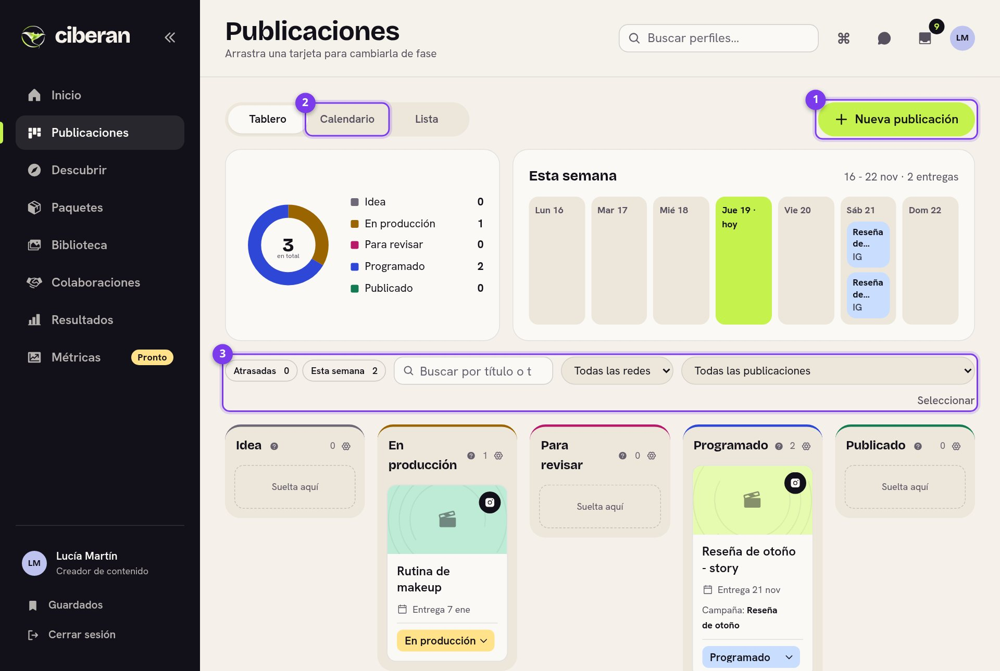

Empieza en 6 pasos
CIBERAN te une con marcas y te ayuda a organizar tu contenido y tus colaboraciones. Es gratis durante el lanzamiento. Para el detalle de cada pantalla, consulta el Manual de usuario.
1. Crea tu cuenta
- Abre CIBERAN y pulsa Crear cuenta.
- Elige Creador de contenido, escribe tu nombre, tu email y una contraseña de al menos 8 caracteres.
- Abre el correo de confirmación y pulsa el enlace. Sin confirmar el email no podrás entrar.
2. Completa tu perfil
- Pulsa tu avatar (arriba a la derecha) → Perfil → Editar ficha.
- Añade foto, portada, una frase de presentación, tu biografía, tus categorías y tu tarifa orientativa.
- Vigila el indicador Ficha completa al…: cuanto más alto, mejor te encuentran.

3. Publica tu primer paquete
Un paquete es lo que ofreces y a qué precio (por ejemplo «Reel + 3 Stories · 300 €»).
- Menú Paquetes → Añadir paquete.
- Elige una plantilla o escribe el título, los entregables y el precio.
- Pulsa Publicar paquete. Destácalo con la estrella para que salga primero.
4. Encuentra marcas
- Menú Descubrir. Filtra por categoría o presupuesto.
- En una tarjeta de marca, pulsa Proponer: pon tu tarifa, tus entregables y marca la casilla de que la propuesta es vinculante.
- Pulsa Enviar propuesta.

5. Responde a las solicitudes
Cuando una marca te contacta, aparece en Colaboraciones → Solicitudes y en tu Bandeja de entrada. Tienes 7 días.
| Opción | Qué hace |
|---|---|
| Aceptar | La colaboración queda aceptada. |
| Hacer contraoferta | Propones otro importe. |
| Rechazar solicitud | Pide confirmación y no se puede deshacer. |
Mira siempre el Siguiente paso de cada colaboración: te dice si te toca a ti.
6. Crea y entrega tu contenido
- Menú Publicaciones → Nueva publicación. Si es de una colaboración, elige Para una colaboración.
- Llévala por las fases: Idea → En producción → Para revisar → Programado → Publicado (arrastra la tarjeta o usa el botón de la ficha).
- En Para revisar, la marca aprueba o pide cambios. Corrige y reenvía si hace falta.
- Cuando todo está aprobado y publicado, pulsa Marcar como completada y valora a la marca.

Trucos para ir más rápido
| Quiero… | Cómo |
|---|---|
| Ir a cualquier pantalla | Ctrl + K (o Cmd + K en Mac): escribe unas letras y pulsa Intro. |
| Reutilizar una portada | Biblioteca: sube imágenes y úsalas con Elegir de la biblioteca. |
| No escribir lo mismo dos veces | Duplicar publicación o Guardar como plantilla. |
| Recuperar algo que borré sin querer | Pulsa Deshacer en los 8 segundos siguientes. |
| Dar el borrador a la marca | En la publicación, pega el Enlace al borrador. |
| Ver cómo me va | Menú Resultados. |
| Volver a estas guías | Menú → Ayuda. |